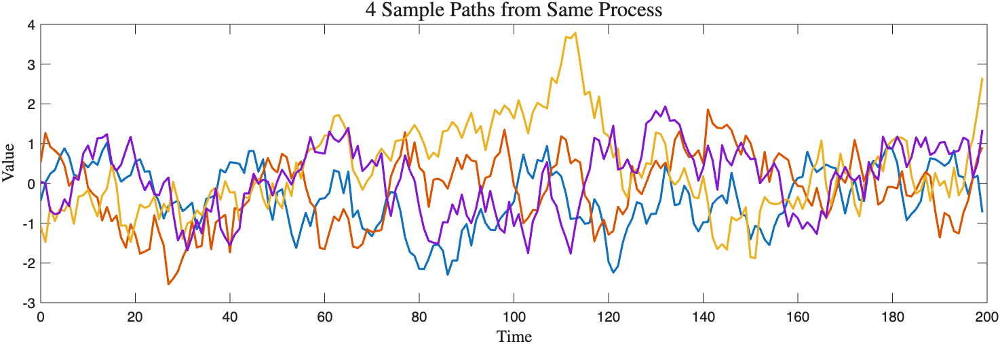

"Everything is related to everything else, but near things are more related than distant things." - Tobler’s First Law of Geography
Spatial statistics is the study of an indexed family of random variables, $Z(\textbf{s})$. A random variable can be thought of a mapping from outcomes to numbers. The Z notation for a random variable is just a nod to the fact that we have the ability to work with complex values. The "index" refers to the spatial vector s that can live in any dimension. For instance, a cartesian map with 5 points on it will be respresented as $(\textbf{s}_1, \textbf{s}_2, \textbf{s}_3, \textbf{s}_4, \textbf{s}_5)$ where each $\textbf{s}_i= (\phi_i,\lambda_i)$ for latitude and longitude. Lastly, something to be aware of is that functions of random variables are random variables themselves.
A gaussian process is a generalization of a random variable. More specifically, it is a distribution over functions. Instead of each "draw" or "realization" being a number, each realization is an entire function called a sample path. Four, 1D sample paths in the time/spatial domain are pictured below, each generated with the same mean and covariance structure.

The covariance kernel/matrix/function provides the underlying structure of the field (tunable through parameters such as correlation length or variance). Choosing a covariance structure can be a bit arbitrary at times. In general, you want to model it off of the properties you observe in your time series/data (is it periodic? stationary? smooth?...). I refer the interested reader to this source for a "Kernel Cookbook." The only rules for choosing a kernel is that it has to be symmetric and positive semi-definite (see "Covariance Matrix of a Random Vector"). To incorporate randomness, you are essentially transforming white noise (z) with the covariance kernel:
$z \sim N(0,1)$One can imagine that if you sample more and more, a distribution over the sample paths will emerge. That is called you latent function distribution which I like to think about as the background function. We choose a Gaussian distribution because it is unikely determined by only 2 measurements (mean and covariance), is closed under conditioning, and closed under marginalization. Closed under conditioning is an important mathematical nuance because it allows us to "condition out" the infinite part of a function/vector to just focus on a finite vector (a necessary condition for Gaussian processes). Below, I present five key facts related to Gaussian Processes and the Bayesian analysis of it:
The covariances of $M$ random variables $X_1, X_2, X_3, ... X_M$ (which make up a random vector X) can be arranged into an $M \times M$ symmetric matrix with positive "variance."